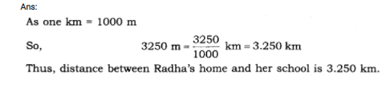

all ex and ques/ans is avlable in wedsite of ncert
1. Give two examples each of modes of transport used on land, water and air.
Ans:
(i) Land—Bus, truck, train.
(ii) Water—Ship, boat.
(iii) Air—Aeroplane, Helicopter.
2. Fill in the blanks:
(i) One metre is___________
(ii) Five kilometre is___________
(iii) Motion of a child on a swing is_____________ .
(iv) Motion of the needle of a sewing machine is_______________ .
(v) Motion of wheel of a bicycle is_____________ .
Ans:
(i) 100
(ii) 5000
(iii) periodic (oscillatory) motion
(iv) periodic oscillatory (v) circular.
3. Why can a pace or a footstep not be used as a standard unit of length?
Ans: Because a pace or a footstep of each and every person is not equal.
4. Arrange the following lengths in their increasing magnitude :
1 metre, 1 centimetre, 1 kilometre, 1 millimetre.
Ans: Ascending order of length:
1 millimetre < 1 centimetre < 1 metre < 1 kilometre
5. The height of a person is 1.65 m. Express it in cm and mm.
Ans:
(a) 1.65 m, as one metre = 100 cm
= 1.65 x 100 cm = 165 cm
(b)65 x 100 x 10 mm = 1650 mm.
6. The distance between Radha’s home and her school is 3250 ,m. Express this distance in km.
Ans:

7. While measuring the length of a knitting needle, the reading of the scale at one end is 3.0 cm and at the other end is 33.1 cm. What is the length of the needle?
Ans: Length of the needle = 33.1 cm – 3.0 cm = 30.1 cm.
8. Write the similarities and differences between the motion of a bicycle and a ceiling fan that has been switched on.
Ans:
(i) Similarity: Both the wheel of a bicycle and a ceiling fan exhibit motion on a fixed axis.
(ii) Dissimilarity: Bicycle moves forward thus executes rectilinear motion but fan does not show such motion.
9. Why could you not use an elastic measuring tape to measure distance? What would be some of the problems you would meet in telling someone about a distance you measured with an elastic tape?
Ans: An elastic measuring tape gives incorrect length of the distance between two points.
Reasons:
(i) The length of the elastic tape varies and depends upon the force by which it is stretched.
(ii) Measurement would vary between 2 or 3 readings even when measured by the same person and by the same elastic tape.
(iii) Measurement would also vary if different persons measure the same distance.
10. Give two examples of periodic motion.
Ans:
(i) Oscillations of a pendulum.
(ii) Motion of swing/motion of earth round the sun.